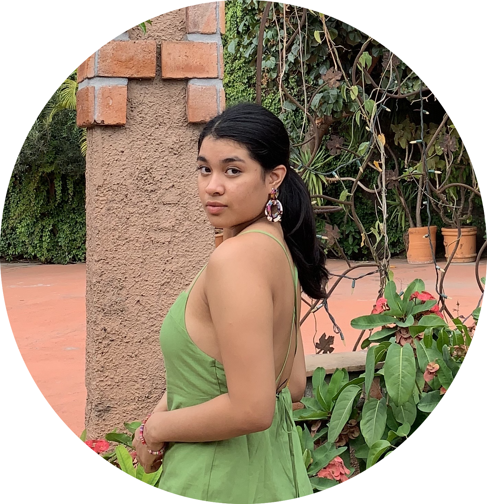

- Me da risa la mayoria de las cosas
- Mi color favorito es el rosa
- Nunca estoy quieta por mucho tiempo
- Mi cumpleaños es el 25 de octubre
- Soy detallista, me gusta dar pero tambien me fijo en las pequeñas cosas que los demás hacen por mi
- No soy tan organizada
- Soy muy expresiba, tanto de emociones, sentimientos y rasgos
- Me gusta mucho tomar fotos
- Siempre quise tener una hermana menor
- Soy muy temperamental

Julieta Rodriguez Solano
Soy una persona dedicada, crativa y me gusta obtener todo lo que me proponga